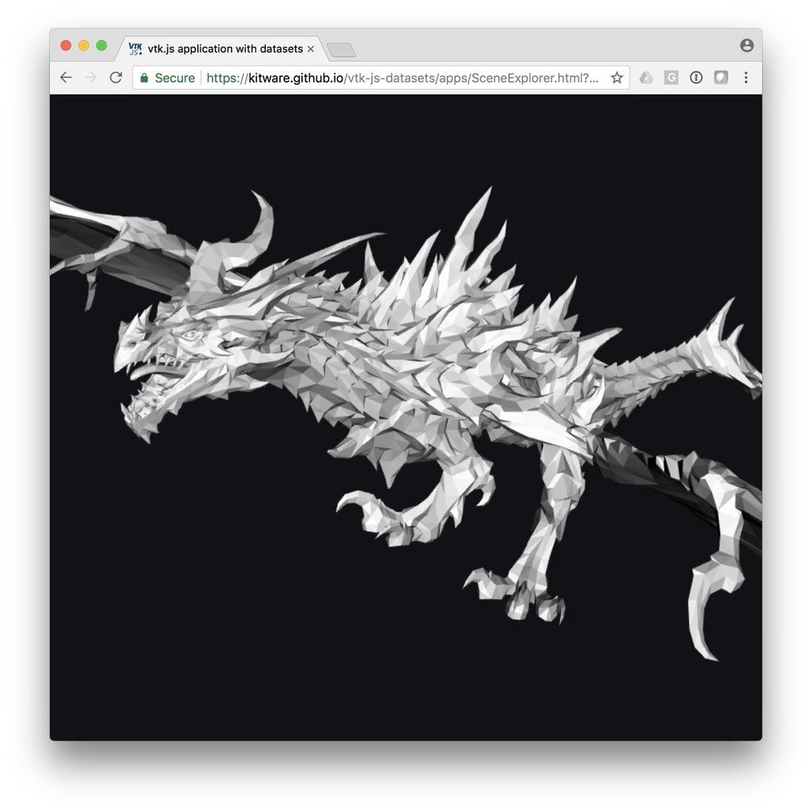

vtk.js application with datasets
Library
Sample data
Dragon

Data Size:
249 KB
Library
Sample data
GitHub
Scene Explorer
Overview
Dragon
Earth
LIDAR
Moyeu Extensible
Single Pin
T-Bar Assembly
Vessel contours
Vessel streamlines
TeleSculptor - MUTC
TeleSculptor - A.P. Hill
Volume Viewer
Overview
Torso
Torso Low Res
Head
Geometry Viewer
Overview
Earth
OBJ Viewer
Overview
TeleSculptor - Smartphone data
UH-60 Blackhawk
Spaceship
Ferrari F1
Danesfield - Jacksonville
Danesfield - Omaha
English
English